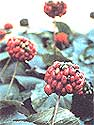
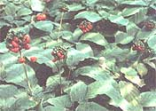
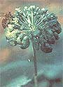
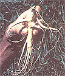
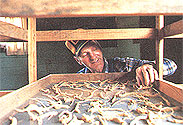

The author of MOTHER NO. 82's popular article "Ginseng: Green Gold" returns to our pages to give you still more priceless information on what may be the ultimate cash crop.
My friend Oscar Wood has grown ginseng for ten years on a steep, wooded hillside near the top of Balsam Mountain in western North Carolina. This past season Oscar sold his organic 'sang for $60 a pound, while most everyone else (including me) was pleased to get $50. He estimates that his good beds produce about 30 pounds (or $1,800 worth) per 1,000 square feet.
I work hard all through the growing season to nurture my plants and to protect them from potential problems. But Oscar just sits back (well, he does pluck some weeds from his beds once in a while) and lets his 'sang grow naturally. He tolerates some crop damage from disease and therefore may harvest a few pounds less per acre; but on the other hand, he avoids the considerable expense of chemical fertilizers, fungicides, and insecticides ...and he gets a premium price for his organically grown roots.
I asked Oscar to explain how he does it, and-once he'd settled himself deep in his favorite recliner-he freely shared his knowledge and experience.
OSCAR'S START
"After I got crippled up and couldn't work reg'lar, I had to find somethin' to do," explained Mr. Wood. "I was lyin' in bed one morning, and-like a vision-I pictured the whole hilltop back of the house covered up with ginseng! I got up, and my wife asked me what I was goin' to do. I said I was fixin' to go 'sang diggin', replant it, and start growin' it on our mountain.
"I ate my breakfast and took off. Hunted till noon and hadn't found one bunch. I was restin' on top of a ridge when I spied a black snake coiled by the side of a stump. I reached down with my hoe to move the critter-and right there stood a four-pronged bunch of gin seng. I looked again, and there stood another big bunch.
"I dug 118 roots off that ridge in two hours. I 'bout give out, so I gathered the 'sang up and brought it home, rested awhile, and then planted it. I spent two more days diggin' at the ridge, and then hunted for plants all over that area that fall, which was in 1974.
"In six weeks I dug enough bunches to set out a bed 113 foot long by 4 foot wide, with the roots spaced six inches apart each way ...it come to about 2,100 plants altogether.
"Then I began pickin' the berries from those plants every year and sowin' the seeds. I got half a pound off 'em the first year, a pound the next year, and two and a half pounds the third. [Author's note: There are about 8,000 seeds in a pound.] The first several years, when we'd get a little ahead, I'd buy a few thousand seeds, too. This past year I sowed 20 pounds of my own seed."
BED PREPARATION AND PLANTING
"Before I plant," continued the 'sang grower, "I cut out the undergrowth, remove the stumps, and drag off the brush. That first year, when I transplanted, I used a mattock to break up the ground and get the roots out. Let me tell you, that's hard work, brother! Now I use a tiller.
"I dig the dead leaves right into the ground, and that's the only fertilizer I use. We plant before the season's leaves drop-which commences about mid-October here-so that the new falling leaves are my mulch.
"I set up the beds six foot wide and maybe 200 foot long down the face of the slope, so they'll drain well, and leave two-foot-wide walkways between the beds. I lay each bed out with string stretched between four cor ner stakes. If a large tree's in the bed, I just let it be ...I can plant roots right next to it, and they grow just fine like that.
"My wife does all the planting now, during the last two weeks in September. She takes a long-handled grubbin' hoe and digs a trench across the width of the bed and drops the seeds in by hand four to six inches apart, dependin' on how they bounce. Lots of times she'll drop two or three seeds instead of one. They'll grow, so we don't worry about it. She covers 'em with about an inch of dirt, then she digs another row eight inches below the first, and so on.
"About twelve pounds of seed'll plant one-third of an acre. I figure between 75 and 90% of our seed germinates."
CARE DURING THE GROWING SEASON
To hear Oscar tell it, the crop pretty much raises itself after it's planted. "All I do during the growin' season is try to keep the weeds down and the rodents out. I've never had any trouble with insects, and I don't use chemical sprays or anythin' else for disease. I've never had to water, either.
"I weed by hand once a year, any time before the weeds flower and go to seed-which is usually mid-August or September. To keep the rodents out, I have to trap the moles. The moles won't eat the ginseng. They just like the grubs and worms, which I've got plenty of. But once they get a run started through a bed, it's like a highway down there. The rats, mice, and voles use the mole run to get to the roots, and it's hard to get the critters out. So as soon as I see mole sign in the spring, I set my traps to catch 'em. I once caught 45 moles out of one run!
"Anyway, I lose some roots to rodents each year, but not many. And I usually have problems with disease infectin' the tops of the plants. It generally starts in August or September and keeps spreadin' right on up till frost, when the tops die off. It doesn't kill the older plants ...it just makes the tops die, which stops growth and seed production. But the next spring a new top comes up. [Author's note: The disease Oscar refers to is probably downy mildew, Peronospora parasitica. You probably should remove all affected tops from your beds, although Oscar doesn't.]
"I don't do anything with my beds during the winter. There's nothing that needs doing."
HARVESTING ANDSTORING THE SEEDS
Oscar's method for propagating his plants couldn't be simpler. "Sometimes the berries start turnin' red in late July, but usually not till August or September. As soon as they ripen, my wife starts pickin' 'em ...about once a week all fall. I figure we get four to twelve seeds off a three-year-old plant and up to about 50 seeds off a healthy old one.
"She puts the berries in a sack made out of cloth window screen and keeps it in a cool spot under a tree. When it's full, I close up the sack-to keep the rats out-and bury it in a deep, dark, shady place so the seeds won't dry out. I cover the screen bag with about four inches of dirt. The side of a bank is the best storage site, 'cause heavy rain will drain right off. [Author's note: Most growers depulp their berries and then mix the seeds with sand before burying them.]
"The seeds won't germinate and sprout till the second spring after you pick the berries, so I just leave 'em in the ground. I never fool with 'em till I'm ready to plant the next fall.
"I always test my seeds in a tub of water just before I plant 'em. The berry pulp's long gone by then, and I can tell if they're good seed. Only the ones that sink to the bottom of the tub are worth anythin'. The floaters I scoop off and throw out in the woods. The sinkers I lay in the shade to drain before I sow 'em."
DIGGING AND DRYING THE ROOTS
Oscar cautions novice growers to exercise patience before harvesting their crops. "To get anythin' for 'em, you have to wait at least four years before you dig your roots. Five years is probably best. Growin' much longer is wastin' time, I think, unless you need to keep harvestin' seed off 'em.
"I dig the roots in the fall, after the berries are picked. It's simple to do. I find the dead top, then I just stick a spade fork under it, loosen the ground up, grab hold of the old stem, and pull it right out of there. That way, you don't cut up the root. Buyers look for nicks and such, and knock down the price if they see 'em.
"I bring the roots to the house and drop 'em in a big ol' tub. When it's just about full of ginseng, I fill it the rest of the way with water and wash each root by hand. I just pick out a handful at a time and get the dirt off with my fingers. Then I rinse 'em in a small bucket of clean water. I make sure there're no leaves or other trash clingin' on the roots, but I'm gentle-I don't scrub or scrape too hard, 'cause I don't want to damage the skin. [Author's note: Dirt left in the roots' grooves is acceptable-even desirable-to buyers.]
"As soon as they're rinsed, I lay 'em out on a screen-bottomed tray in the shade to drain. I don't want the big parts of any of the roots to touch each other until they're almost dried, or else they'll rot where they're touchin'. So I lay 'em out only one layer thick, and the screen lets air get around 'em.
"When I have a tray full, I slide it onto one of the bottom racks in my dryin' room. I always slip a new tray in at the bottom so any water still on the roots will drip on the floor. Then I go back and finish washin' and layin' out the rest of the roots in the tub. If I leave 'em in the water too long, they'll rot.
"I keep the temperature in my dryin' room at 90° for about the first twelve hours after the roots are washed. You got to get rid of most of that wetness right away, or the roots'll ruin on you. I use a wood stove. [Author's note: Any source of dry heat will do.] And I have a thermometer hangin' in the room where I can keep an eye on it. Some folks'll put their roots right next to, or even on, a stove ...but that's a mistake. That'll burn the roots or dry 'em too fast, and you won't get as good a price.
"After the first night, I try to keep the temperature about 70°. But in cold, damp weather-'specially early on dewy mornings or whenever it's rainin'-I fuel up the wood stove to heat the room back up to 90°. If I don't, the roots seem to take back moisture from the air, and mold. Once the temperature's up to 90°, I open the door if I have to, to see that the room stays under 95°.
"It needs about two weeks of dryin' before most of the moisture is out of the roots. After that, I can stack all the trays together on my top rack-or dump two or three trays into one, to make room for a fresh tray on a bottom rack. It may take another three or four weeks before the roots are completely dry. You can pretty well tell they're dry if all the sponginess is gone and they break with a snap and the break is a little waxy-lookin'."
MAKING IT PAY
"After the roots are completely dry," explained Oscar, "I pack 'em up in a clean cardboard box till I'm ready to sell. I don't seal it completely tight, so they can still get air. And I make sure the rodents can't get to it. Dried ginseng keeps fine at room temperature, but not in a basement or cellar by a window ...they'll suck water right back into themselves, and mold.
"The price you get is always fluctuatin', so you got to be cautious sellin'. The folks I sold mine to this year gave me a better price 'cause I didn't use chemicals.
"I'd advise anyone against using chemical fertilizers. The roots grow too fast, the plants are more susceptible to disease, and buyers don't like 'em as much. You're just not helpin' yourself to use chemical fertilizers.
"I think the future of ginseng is as solid as anythin' right now, but I'd still tell anyone wantin' to grow it to be cautious and not to get too much into it at first. I figure in ten years about all I've spent is $1,200. The seven-strand barbed wire fence that I put around our six acres to keep out pests-animal and human-cost $600 ...and during the first five or six years, I reckon I paid another $600 all told for seeds.
" 'Course, the biggest expense is going to be your own labor. I'm lucky: My wife does a whole lot of it, and my kids helped some in the beginnin'. They're even talkin' about goin' into it with me now. But it's hard work! Ever since that morning when I dreamed my mountain was covered green with ginseng, I've been workin' toward gettin' the whole hillside planted. I'm now half done ...still got another three acres to go."
EDITOR'S NOTE: The author offers both ginseng seeds and seedlings for sale by mail. For ordering information-and for an update on when Mr. Persons' forthcoming book on green gold will be available-write or call W. Scott Persons, Tuckasegee Valley Ginseng, Dept. 5A, Box 236, Tuckasegee, NC 28783, 704/2935-189.
Also, please keep in mind that, in the time since Oscar Wood transplanted the wild 'sang from his ridge to cultivated beds, virtually all states in which ginseng is a native plant have enacted regulations to protect the species from being overharvested. Your state may have established specific seasons for digging or buying ginseng, and may require you to obtain a license for harvesting the herb. Some buyers, in fact, will require you to certify that your ginseng-whether wild or cultivated-is "legal" before they will purchase your crop. It's important, therefore, that you check with the department in your state that's responsible for regulating such matters (your local agricultural extension office should be able to refer you to the appropriate agency), and that you comply with whatever legal guidelines may exist.
In any event, if you gather wild ginseng, it's in your own best interest to protect the species and the environment by following the same rules of thumb that old-time 'sang hunters have always used as guides: Harvest only mature plants (with three or more prongs); dig plants only in the fall, when their berries are ripe and red; always sow at least some berries in the same spot after you take a plant; and never harvest all the mature wild 'sang growing in one area.
More Tips on Growing Ginseng Organically
If you're going to grow ginseng organically-in other words, without an assist from chemical fertilizers and pesticides-you'll need to do everything you can to nurture strong, healthy plants that will resist disease and will produce substantial root systems.
Good growing conditions are, of course, essential. Not everyone has a planting site equal to Oscar's, where the soil is naturally rich and is protected with a thick, moist mulch of leaf litter ...where the land slopes perfectly for efficient drainage. . . and where, because there is no thick growth surrounding the bed site, air circulates freely. But even if these conditions don't already exist on your acreage, you can create them.
Although Oscar uses no fertilizer of any kind, some successful organic growers do apply natural soil amendments. A good soil analysis will show you which major elements and micronutrients you may need to add when preparing your beds. (You may also need to adjust the growing medium's pH, which should be between 5.0 and 6.0.) One company I'm familiar with-The Carolinas Center for Agricultural Husbandry (Rt. 2, Box 968, Boone, NC 28607)-has experience with ginseng cultivation and can analyze your soil, as well as recommend natural amendments specifically intended for that particular crop.
Other organic growers forgo a soil analysis and simply apply such natural foliar feeds as liquid seaweed or fish emulsion (or a combination of the two). The natural solutions contain a little of most anything your ginseng might need. Most growers spray immediately after their plants emerge in the spring, again at flowering, and perhaps one more time during the summer if there are drought conditions.
Oscar has only minor problems with disease, probably because he spaces his plants well apart and provides all other conditions necessary to produce healthy specimens able to resist the various evil fungi that can attack ginseng. If you do experience a serious disease infestation (alternaria blight, for example, can cause substantial crop losses), something is wrong with your growing environment. The Carolinas Center can also help with organic disease control.
|
 Buyers insist that roots be bone-dry when shipped, so it's important to get rid of all the moisture in your crop. Oscar places his harvest on racks in a room heated by a wood stove, and dries the roots, slowly, keeping an eye out for signs of mold. |
 |
 |
|
|
|
 |
|
 |
|
|